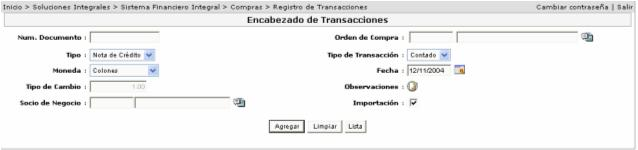
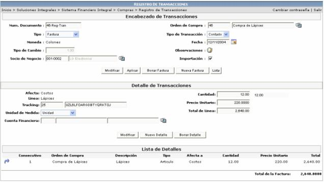

En esta opción se registran las facturas de las compras realizadas en la empresa. Se le debe de asociar la orden de compra que va a generar esa factura en el tanto la factura a generar tenga como documento de soporte la orden de compra. Si la factura no involucra orden de compra se permite dejar vacío el campo “Orden de compra”

Cuando se crea el encabezado de la transacción, el sistema automáticamente le creará las líneas de detalle, que van hacer las líneas de la orden de compra, y también le permite crear líneas nuevas.
Existe un campo “tipo” el cual contiene los distintos rubros que se podrán asociar a una línea (costo, gasto, impuesto, flete, seguro).
Si el campo tipo contiene el valor costo, el sistema solicitará la orden de compra que soporta dicho registro.
Si lo que se selecciona es gasto o impuesto, el sistema solicitará el número de póliza correspondiente a la que se asociarán dichos registros.
Si el tipo seleccionado para la línea en creación, es flete o seguro, se debe asociar el Tracking al que pertenece.

Cuando se aplica una transacción, el sistema la deja lista para que después se le pueda asociar una Póliza de Desalmacenaje (este proceso se explicará más adelante).